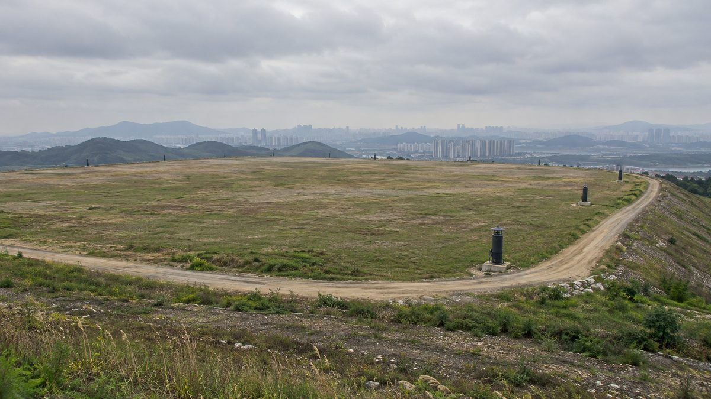

수도권매립지 2매립장 위 154만㎡ 쓰임새 시민 숙의 시작…태양광·공원·식물원·UAM 시험장 놓고 2027년 3월 토론회

인천시, 29일 시민숙의 학습마당 열어…폐기물 8억4,717만 톤 묻은 땅, 기후부 태양광안에 주민 반발 뒤 숙의로 돌려, "특정 시설 결정된 것 아냐"
인천시가 사용을 끝낸 수도권매립지 제2매립장 상부 154만㎡의 쓰임새를 정하는 시민 숙의를 29일 시작했다. 시는 이날 서해구 인천시 인재개발원에서 시민숙의 학습마당을 열고 숙의 교육과 사업 설명, 전문가 발제, 질의응답을 진행했으며, 11월과 12월 소분임 숙의를 거쳐 2027년 3월 숙의토론회를 연 뒤 갈등관리추진위원회가 정책권고안을 만들어 박찬대 인천시장에게 권고할 계획이다. 제2매립장은 2000년부터 2018년까지 폐기물 8억4,717만 톤을 묻은 곳으로, 2028년쯤 복토가 끝나면 국제 규격 축구장 215개 넓이의 땅이 생긴다. 기후에너지환경부가 지난해 이 땅에 태양광 등 재생에너지 시설을 짓는 방안을 내놓자 30년 넘게 악취와 분진을 겪어 온 서해구·검단구 주민이 반발했고, 시는 결정을 시민 숙의에 맡기기로 했다. 이날 이기종 인천시 매립지정책과장은 주민이 선호한 공원·골프장 결합안(2018년 용역)과 UAM·드론 시험단지, 스포츠 공원(2024년 북부권 종합발전계획) 등을 소개하면서 "현재 특정 시설 도입이 결정된 것은 아니다"라고 밝히고, 상부로 갈수록 면적이 좁아지고 침하와 매립가스, 침출수를 관리해야 하는 땅이라는 점을 짚었다. 검단시민연합 공동대표는 사계절 스마트 식물원을, 이정훈 전 서울대 교수는 생태 복원과 여가·교육·생산을 묶은 복합공간을 제안했다.
시민에너지 관점
8억4,717만 톤의 폐기물 위에 생길 154만㎡는 새로 숲이나 논밭을 헐지 않고 쓸 수 있는 큰 땅이지만, 그 곁에서 30년 넘게 냄새와 먼지를 견딘 사람들이 있다. 정부안이 반발을 산 것은 태양광 자체보다, 피해를 겪은 주민에게 결정권도 몫도 없이 시설만 얹으려 했기 때문으로 보인다. 침하와 매립가스 관리 때문에 건물을 올리기 어려운 땅이라면 발전 설비는 여전히 유력한 선택지이고, 그렇다면 서해구·검단구 주민이 출자하고 수익을 나누는 주민 소유 발전소가 공원·식물원과 나란히 숙의 의제에 올라야 한다. 인천시는 11~12월 소분임 숙의 자료에 주민 소유형 재생에너지안을 넣어, 시민들이 쓰임새뿐 아니라 그 땅에서 나올 이익의 주인을 함께 고를 수 있게 해야 한다.
출처: 인천투데이 2026-10-29 박규호 기자 원문 보기
首都圏埋立地第2埋立場の上部154万㎡の使い道、市民熟議が始まる…太陽光・公園・植物園・UAM試験場を巡り2027年3月に討論会
仁川市、29日に市民熟議の学習会…廃棄物8億4,717万トンを埋めた土地、気候部の太陽光案に住民が反発し熟議へ、「特定の施設は決まっていない」
仁川市は29日、使用を終えた首都圏埋立地第2埋立場の上部154万㎡の使い道を決める市民熟議を始めた。市はこの日、西海区の仁川市人材開発院で市民熟議の学習会を開き、熟議教育、事業説明、専門家の発表、質疑応答を行った。11月と12月の小分科熟議を経て2027年3月に熟議討論会を開いた後、葛藤管理推進委員会が政策勧告案をまとめ、朴賛大（パク・チャンデ）仁川市長に勧告する計画だ。第2埋立場は2000年から2018年までに廃棄物8億4,717万トンを埋めた場所で、2028年ごろ覆土が終わると国際規格のサッカー場215面分の土地が生まれる。気候エネルギー環境部が昨年この土地に太陽光などの再生可能エネルギー施設をつくる案を示すと、30年以上悪臭や粉じんに苦しんできた西海区・黔丹区の住民が反発し、市は決定を市民熟議に委ねることにした。この日、イ・ギジョン仁川市埋立地政策課長は、住民が好んだ公園とゴルフ場の組み合わせ案（2018年の調査業務）や、UAM・ドローン試験団地、スポーツ公園（2024年の北部圏総合発展計画）などを紹介し、「現在、特定の施設の導入が決まったわけではない」と述べたうえで、上に行くほど面積が狭くなり、沈下や埋立ガス、浸出水の管理が必要な土地だと指摘した。黔丹市民連合の共同代表は四季型のスマート植物園を、イ・ジョンフン元ソウル大教授は生態復元と余暇・教育・生産を組み合わせた複合空間を提案した。
市民エネルギーの視点
8億4,717万トンの廃棄物の上に生まれる154万㎡は、新たに森や田畑を壊さずに使える広い土地だが、そのそばで30年以上においとほこりに耐えてきた人々がいる。政府案が反発を招いたのは、太陽光そのものよりも、被害を受けた住民に決定権も取り分もないまま施設だけを載せようとしたためとみられる。沈下や埋立ガスの管理で建物を建てにくい土地なら、発電設備は依然として有力な選択肢であり、そうであれば西海区・黔丹区の住民が出資し収益を分け合う住民所有の発電所が、公園や植物園と並んで熟議の議題に上るべきだ。仁川市は11～12月の小分科熟議の資料に住民所有型の再生可能エネルギー案を加え、市民が使い道だけでなく、その土地から生まれる利益の持ち主も一緒に選べるようにすべきだ。
出典: 仁川トゥデイ 2026-10-29 パク・ギュホ記者 原文を読む
首都圈垃圾填埋场第二填埋场上部154万平方米用途启动市民审议…围绕光伏、公园、植物园、UAM试验场，2027年3月举行讨论会
仁川市29日举办市民审议学习会…这片土地埋有8亿4,717万吨废弃物，气候部光伏方案遭居民反对后改由审议决定，"尚未决定引入特定设施"
仁川市29日启动市民审议，决定已停止使用的首都圈垃圾填埋场第二填埋场上部154万平方米土地的用途。当天，仁川市在西海区仁川市人才开发院举办市民审议学习会，进行了审议培训、项目说明、专家发言和问答；计划经过11月和12月的小组审议，于2027年3月举行审议讨论会，之后由冲突管理推进委员会拟定政策建议案，向仁川市长朴赞大提出建议。第二填埋场在2000年至2018年间填埋了8亿4,717万吨废弃物，预计2028年前后完成覆土后，将形成相当于215个国际标准足球场的土地。气候能源环境部去年提出在这片土地上建设光伏等可再生能源设施的方案后，30多年来饱受恶臭和粉尘之苦的西海区、黔丹区居民表示反对，仁川市于是决定交由市民审议决定。当天，仁川市填埋场政策科科长이기종(Lee Gi-jong)介绍了居民偏好的公园与高尔夫球场结合方案（2018年研究）以及UAM和无人机试验园区、体育公园（2024年北部圈综合发展规划）等，并表示"目前尚未决定引入特定设施"，同时指出这片土地越往上面积越窄，需要管理沉降、填埋气体和渗滤液。黔丹市民联合的共同代表提议建设四季智能植物园，前首尔大学教授이정훈(Lee Jeong-hun)则提议建设融合生态修复与休闲、教育、生产的复合空间。
市民能源视角
8亿4,717万吨废弃物之上将形成的154万平方米，是一块无需再砍伐森林或破坏农田即可使用的大片土地，但在它旁边，有人30多年来一直忍受着臭味和粉尘。政府方案之所以引发反对，与其说是因为光伏本身，不如说是因为它想在不给受害居民决定权和收益份额的情况下直接把设施放上去。如果这片土地因沉降和填埋气体管理而难以建造建筑物，发电设施仍是有力的选项；那么，由西海区、黔丹区居民出资并分享收益的居民所有电站，就应与公园、植物园并列进入审议议题。仁川市应在11至12月小组审议的资料中加入居民所有型可再生能源方案，让市民不仅选择用途，也一起选择这片土地所产生收益的主人。
来源: 仁川今日 2026-10-29 박규호(Park Gyu-ho)记者 查看原文
Citizen deliberation begins on use of 1.54 million㎡ atop Sudokwon Landfill No. 2, with solar, parks, botanical garden and UAM test site on the table ahead of March 2027 forum
Incheon holds first citizen deliberation learning session on Oct. 29 for land over 847.17 million tonnes of waste; city turned to deliberation after residents opposed ministry's solar plan, says "no specific facility has been decided"
Incheon began a citizen deliberation on Oct. 29 to decide how to use 1.54 million㎡ of land on top of Landfill No. 2 at the closed Sudokwon Landfill. At a learning session held that day at the city's human resources development institute in Seohae-gu, participants received deliberation training, a project briefing, expert presentations and a Q&A; the city plans small-group deliberations in November and December and a deliberation forum in March 2027, after which its conflict management committee will draw up policy recommendations for Mayor Park Chan-dae. Landfill No. 2 took in 847.17 million tonnes of waste from 2000 to 2018, and once capping is finished around 2028 it will leave land equal to 215 international-size football pitches. After the Ministry of Climate, Energy and Environment proposed last year to put solar and other renewable energy facilities on the site, residents of Seohae-gu and Geomdan-gu, who have endured odour and dust for more than 30 years, objected, and the city decided to leave the choice to citizen deliberation. Lee Gi-jong, head of the city's landfill policy division, outlined earlier ideas including a park-and-golf-course combination that residents preferred in a 2018 study and a UAM and drone test zone and sports park from a 2024 northern-area development plan, saying "no specific facility has been decided," and noted that the land narrows toward the top and requires management of settlement, landfill gas and leachate. A co-representative of the Geomdan Citizens' Alliance proposed a four-season smart botanical garden, and former Seoul National University professor Lee Jeong-hun proposed a mixed space combining ecological restoration, leisure, education and production.
Citizen Energy View
The 1.54 million㎡ that will sit on 847.17 million tonnes of waste is a large site that can be used without clearing new forest or farmland, but right next to it are people who have put up with smell and dust for more than 30 years. The government plan appears to have drawn opposition less because of solar itself than because it sought to place facilities on the site without giving the affected residents a say or a share. If settlement and landfill gas make the land hard to build on, generating equipment remains a strong option, and in that case a resident-owned power plant, financed by people in Seohae-gu and Geomdan-gu who share in its income, should sit on the deliberation agenda alongside parks and gardens. Incheon should add a resident-owned renewable energy option to the materials for the November–December small-group sessions so that citizens choose not only how the land is used but also who owns the income it produces.
Source: Incheon Today 2026-10-29 Park Gyu-ho Read the original